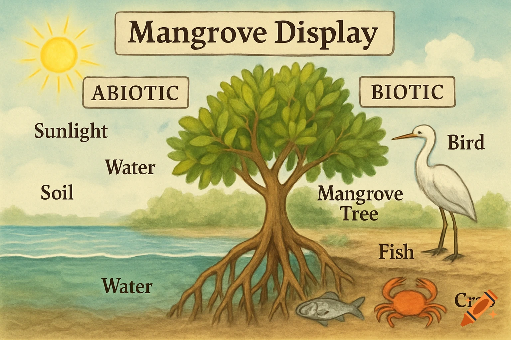

Review of Week 1 Concepts
Term 1, Week 2, Lesson 1
Do Now
- Write down the definition of an ecosystem in your own words.
- List two biotic factors and two abiotic factors you might find in a local park.
- Why is species diversity important for an ecosystem? Write one sentence explaining your thinking.
Daily Review
- What is the term for a community of living organisms interacting with their non-living environment?
- Habitat
- Ecosystem
- Biome
- Population
- Which of the following is an abiotic factor?
- Grass
- Bacteria
- Sunlight
- Earthworms
- A producer in an ecosystem is an organism that:
- Hunts other organisms for food
- Breaks down dead organic matter
- Makes its own food using energy from the sun
- Feeds on other consumers
- Which of the following is an example of a biotic factor?
- Temperature
- Rainfall
- Decomposers
- Soil pH
- Species diversity refers to:
- The total number of individual organisms in an ecosystem
- The variety of different species found in an ecosystem
- The number of abiotic factors in an environment
- The size of a habitat
Learning Intentions
Today we are learning to consolidate our understanding of ecosystems, biotic and abiotic factors, and species diversity through retrieval practice and application.
Success Criteria
Keywords
- ecosystem
- A community of living organisms interacting with each other and their non-living environment.
- biotic factor
- A living component of an ecosystem (e.g. plants, animals, bacteria).
- abiotic factor
- A non-living component of an ecosystem (e.g. temperature, water, sunlight, soil).
- species diversity
- The variety of different species found within an ecosystem.
- producer
- An organism that makes its own food, usually through photosynthesis.
- consumer
- An organism that obtains energy by eating other organisms.
- decomposer
- An organism that breaks down dead organic matter, recycling nutrients back into the ecosystem.
Learning Activities
Activity 1 — I DO: Ecosystem Recap
Teacher-led recap of Week 1 concepts using annotated images of Australian ecosystems.
Key points to cover:
- Ecosystem definition: A community of living organisms interacting with each other and their non-living environment. Emphasise that ecosystems include both biotic and abiotic components working together.
- Biotic factors: Producers (e.g. eucalyptus trees, seagrass), consumers (e.g. kangaroos, parrotfish), and decomposers (e.g. fungi, bacteria). Use images from the Great Barrier Reef and jarrah forest to illustrate.
- Abiotic factors: Temperature, water availability, sunlight, soil type, salinity. Show how these differ between a reef ecosystem and a desert ecosystem.
- Species diversity: A measure of ecosystem health — ecosystems with greater species diversity tend to be more resilient to change. Compare species diversity of Australian bushland, coral reef, and arid desert environments.
- Interactions: How changes to one factor (biotic or abiotic) can have flow-on effects. For example, reduced rainfall (abiotic) affects plant growth (biotic), which affects herbivore populations (biotic).
Check for Understanding:

Think-Pair-Share: “Give me one example of a biotic factor interacting with an abiotic factor.”
Activity 2 — Adaptations
Presentation
Activity 3 — YOU DO: Abiotic Change Paragraph
Write a short paragraph (5–7 sentences) explaining how a change to one abiotic factor could affect biotic factors in a local ecosystem.
Prompt: Imagine that rainfall in a jarrah forest in south-west Western Australia decreased by 50% over several years. Explain how this abiotic change could affect the biotic factors in this ecosystem. Consider the effects on producers, consumers, and decomposers.
Structure your paragraph using the following guide:
- Identify the abiotic factor and the ecosystem.
- Explain the direct effect on producers.
- Explain the flow-on effect to primary consumers.
- Explain the flow-on effect to secondary consumers or decomposers.
- Comment on what this might mean for species diversity.
Reflection
- Define the term “ecosystem” in one sentence.
- Give one example of a biotic factor interacting with an abiotic factor in an Australian ecosystem.
- A bushfire destroys much of the vegetation in a national park. Explain one way this could affect the consumers in that ecosystem.
- True or False: An ecosystem with low species diversity is more resilient to environmental change.
- Name two abiotic factors that would differ between a coral reef and a desert ecosystem.